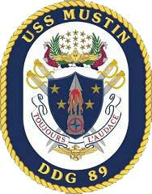

Naval Career

Assistance Chief Engineer (ACE)
USS MUSTIN (DDG-89)
2018-2021
"Toujours, L'Audace | Always be Bold"

Program Manager
Commander, Naval Surface Force, U.S. Pacific Fleet
2021-2022
"Train | Maintain | Fight"